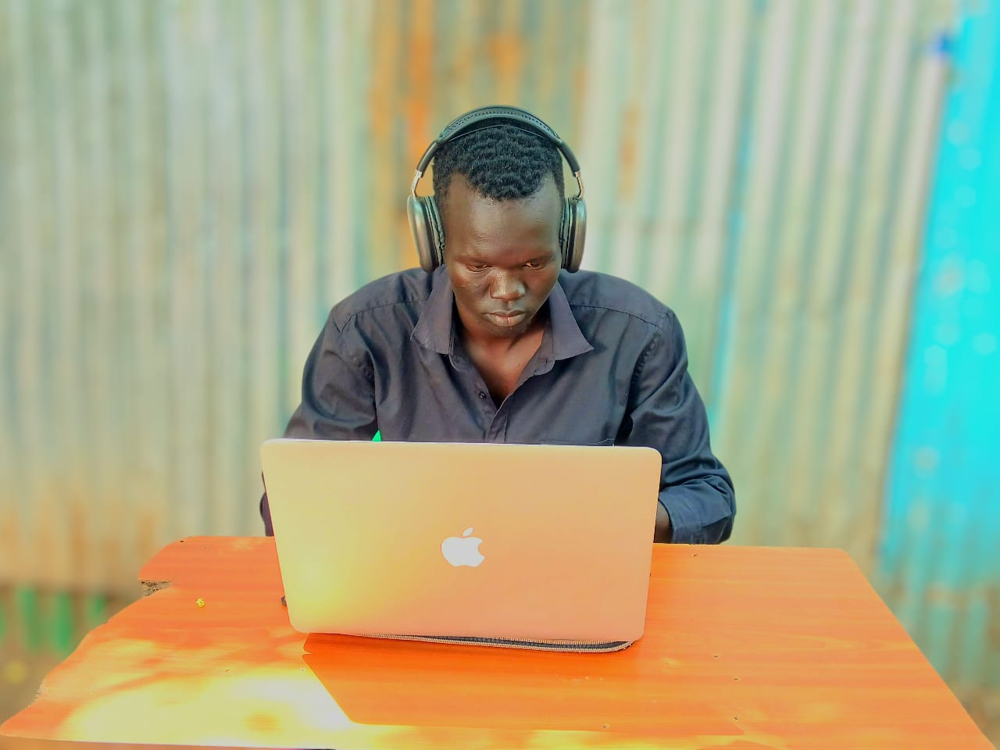

Education
Bachelor of Arts in Sustainable Development
XIM University · Odisha, India
Academic background in sustainable development.
About me
A background in education and sustainable development, now focused on building useful digital products.

I’m an emerging technology professional working toward a future in computer science.
My journey combines a background in education and sustainable development with a growing interest in building useful digital products. I enjoy learning how websites work, experimenting with code, exploring data, and finding practical ways technology can solve everyday problems.
Right now, I’m strengthening my foundations through hands-on projects and structured learning. I value consistency, curiosity, and being honest about what I know and what I’m still learning.
A broader foundation informs how I approach learning, people and problems.
Education
XIM University · Odisha, India
Academic background in sustainable development.
Experience
Teaching · Research · Community engagement
Experience across educational support, data collection, and community-focused initiatives, alongside a developing technical portfolio.